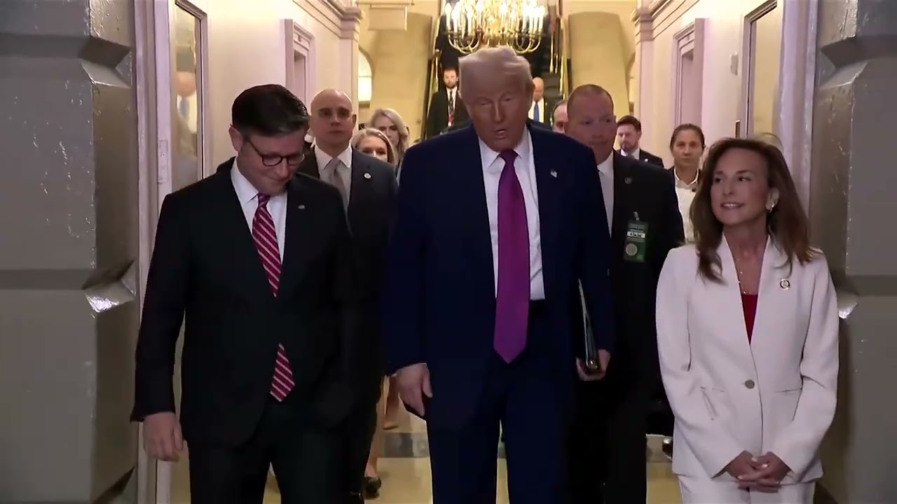

【美国众议院经过长时间辩论后通过特朗普的大规模减税法案 | 路透社】
Summary: The US House narrowly passed Trump's tax and spending bill, fulfilling campaign pledges with tax breaks and increased military spending, but it still requires Senate approval and would significantly increase national debt.
摘要： 美国众议院以微弱优势通过了特朗普的税收和支出法案，兑现了减税和增加军费开支的竞选承诺，但仍需参议院批准，并将大幅增加国家债务。

⏱️ Estimated Reading Time: 2 min
The 215, the NASER 214 with one answering present.
215票赞成，NASER 214票，1票出席。
The bill is passed.
法案获得通过。
The US House of Representatives passed a tax and spending bill that would enact much of President Donald Trump's policy agenda by a single vote on Thursday.
美国众议院周四以一票之差通过了一项税收和支出法案，该法案将落实唐纳德·特朗普总统的大部分政策议程。
The reforms still need approval from the Senate before Trump can sign them into law.
这些改革仍需参议院批准，特朗普才能将其签署成为法律。
The House lawmakers debated the bill over two successive nights as Republican House Speaker Mike Johnson made tweaks to satisfy various factions of his party.
众议院议员连续两晚就该法案展开辩论，共和党众议院议长迈克·约翰逊为满足党内各派系而做出调整。
The bill would fulfill many of Trump's populist campaign pledges, delivering new tax breaks on tips and car loans while boosting spending on the military and border enforcement.
该法案将兑现特朗普的许多民粹主义竞选承诺，为小费和汽车贷款提供新的税收减免，同时增加军事和边境执法的支出。
It would add about $3.8 trillion to the federal government's 36.2 trillion in debt over the next decade.
未来十年，这将使联邦政府的债务从36.2万亿美元增加约3.8万亿美元。
According to the nonpartisan Congressional Budget Office, it sets out the extension of corporate and individual tax cuts passed during Trump's first term and cancels many green energy incentives passed by former President Joe Biden.
根据无党派的国会预算办公室，该法案延续了特朗普第一个任期内通过的企业和个人减税政策，并取消了前总统乔·拜登通过的许多绿色能源激励措施。
It would also tighten eligibility for health and food programs for the poor and fund Trump's crackdown on immigration by adding tens of thousands of border guards and creating the capacity to deport up to 1 million people each year.
该法案还将收紧贫困人口的健康和食品计划的资格，并通过增加数万名边境警卫和每年驱逐多达100万人的能力，为特朗普的移民打击行动提供资金。